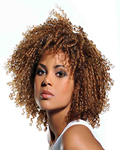
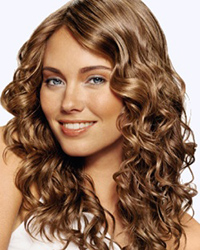

Curly hair


1. Always wash hair with cool or cold water as hot water will dry out hair and add to frizz.
2. Don’t shampoo more than twice a week – using shampoos which don’t lather much.
3. Try not to wrap a towel around hair – blot – using a pure cotton towel.
4. Comb out hair or brush it while it is wet as dry hair will pouf up and become brittle. Comb hair with wet fingers.
5. Always use a conditioner after a shampoo. When the hair looks extra unkempt – dilute some conditioner and apply it to the ends of hair.
6. Hot oil treatment is ineffective for this hair type as oil forms a coating and does not enter hair cells.
7. Always wear a cap while swimming, to save it from chlorine or salt and strong sunlight as all of these will tend to cause frizz.
8. Humid climate causes hair to lose moisture and dry more than normal. A last rinse with carbonated water or sparkling water can be a great help.
9. Make it a point to visit a hair salon once in three months, so that split ends can be trimmed.
10. Wearing a head band after a shampoo, will flatten hair on the crown and leave the ends curly
These are some homemade hair masks for curly hair to bring a glossy sheen to pretty curls
1. Add 2 egg yolks to a cup of warm water.
Add 1 teaspoon of honey
Add a few drops of any essential oil.
Apply this mixture to hair and leave for an hour. Wash hair and pat dry. Do this after hair has been shampooed.
2. Take pulp of half an avocado
1 cup of mayonnaise
Blend both together and apply on hair. Wear a shower cap. Leave this on hair for ½ hour before washing.